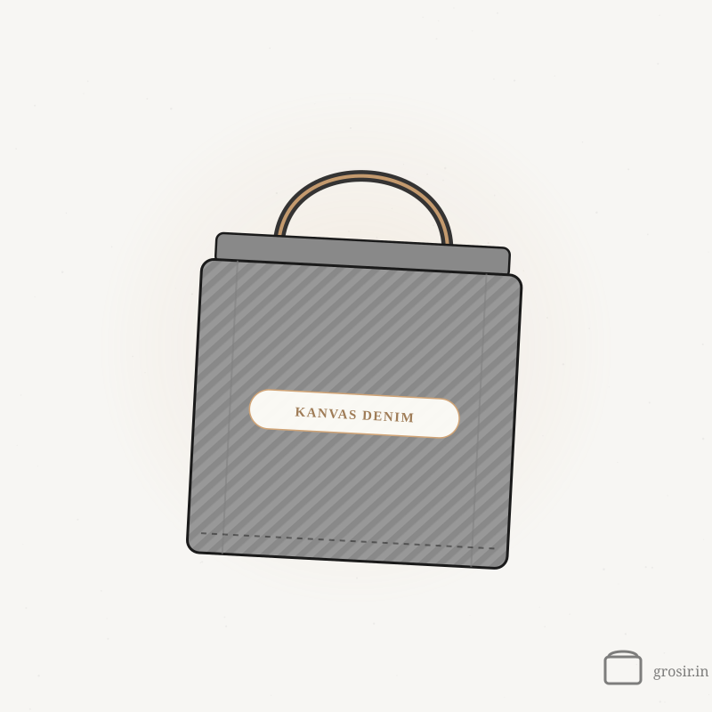
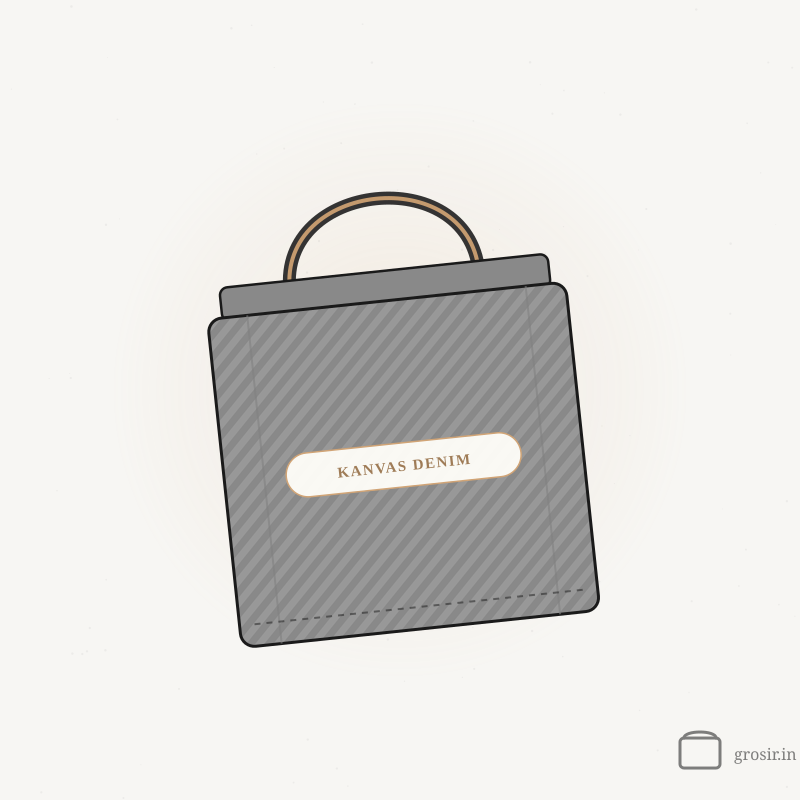

Kanvas Denim
Totebag Kanvas Denim
Mulai dari Rp 36.000/pcs · harga polos, tergantung jumlah pesanan
Totebag kanvas denim tampil kokoh dan dibuat untuk dipakai lama. Warnanya broken white dan navy. Cocok untuk merchandise kantor kelas atas, hadiah klien, atau totebag edisi terbatas yang mau tampil beda dari kanvas biasa.
Bahan
Kanvas Denim
Ukuran
36 x 42 x 12 cm (custom)
Warna
Broken White, Navy
Metode Print
DTF (semua warna), sublim (broken white)
Harga per pcs — makin banyak, makin murah
| Jumlah Pesanan | Harga / pcs |
|---|---|
| 1–9 pcs polos | Rp 52.400/pcs |
| 10+ pcs | Rp 48.000/pcs |
| 200+ pcs | Rp 42.000/pcs |
| 500+ pcs | Rp 36.000/pcs |
Estimasi total -
Pilihan Custom
Pilihan warna: Broken White, Navy
Sablon DTF — semua warna
Cetak sublim — khusus broken white
Tampilan denim yang kokoh dan awet
Mau polos? Bisa — Totebag Kanvas Denim polos bisa dibeli tanpa minimum, satuan pun bisa. Custom sablon mulai 10 pcs.
Mungkin Kamu Suka


Bahan lain yang sering dipesan bareng.
Baby Kanvas
Totebag Baby Kanvas
Kanvas ringan dan halus, enak dipakai sehari-hari
Kanvas Natural
Totebag Kanvas Natural
Kanvas marsoto yang tebal dan rapi, favorit untuk goodie bag
Blacu
Totebag Blacu
Totebag blacu natural yang ramah di kantong
Taslan
Totebag Taslan
Ringan, tahan air, dan tidak gampang sobek